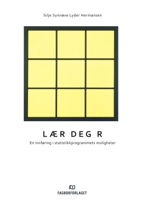
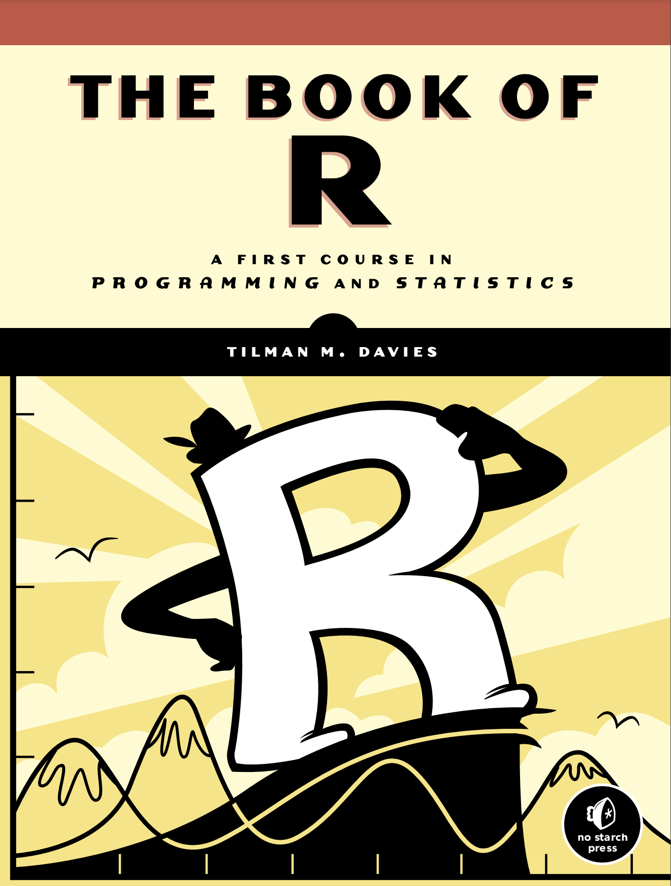
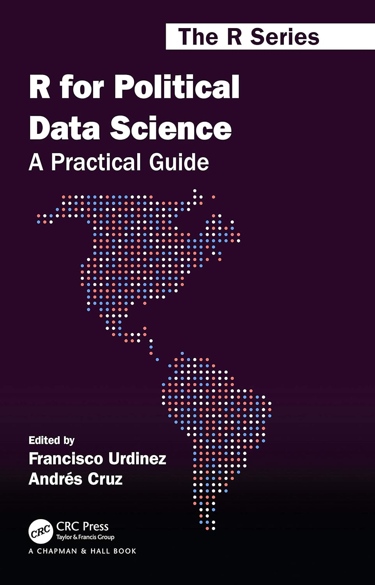

Programmering kan være vanskelig å sette seg inn i. Det trengs en del logisk tenkning for å forstå hvordan et programmeringsspråk er satt sammen. Heldigvis, er R et programmeringsspråk som går under “high level programming language”, som vil si at språket er mer menneske vennlig enn datamaskin vennlig. Om språket hadde vært lavest mulig “low level code” ville det vært koding med bare 1’ere og 0’ere, altså binær kode… da hadde de aller flest slitt med å få noe gjort.
Da vi skjønner at R kan være kompleks og til tider frustrerende å forstå, har vi noen forslag til bøker som kan være nyttige for nybegynnere, men også andre. Noen er norske, men også noen engelske. Disse bøkene fungerer som et supplement til pensum i BST290 - Kvantitativ forskningsmetode, da boken til Kellstedt & Whitten er veldig god for å forstå teorien bak kvantitativ metode, men ikke nødvendigvis for å lære seg R og logikken bak programmeringsspråk.
Litteratur anbefalinger
Lær Deg R
“Lær Deg R”, skrevet av Silje Synnøve Lyder Hermansen er en fin bok på norsk for å forstå grunnleggende R. Med denne boken vil du kunne få en del praktisk erfaring med å bruke R, samt at det følger med et datasett og eksempel oppgaver man kan jobbe med underveis. Boken finnes kun i fysisk format.

The Book of R
“The Book of R” skrevet av Tilman M. Davies er en mer teknisk bok, men går også mer detaljert inn i R sine funksjoner. Boken er på engelsk og ligger ute gratis på nett.

Hands-on programming with R
“Hands-on programming with R” skrevet av Garrett Grolemund er en grei nybegynnervennlig bok som ligger gratis tilgjengelig på nett. Den er også på engelsk.

R for Political Data Science
“R for Political Data Science” skrevet av Francisco Urdinez og Andres Cruz er en bok for dem som studerer statsvitenskap og ønsker en ekstra innføring i hvordan R og statistikk passer sammen i en statsvitenskapelig verden. Boken er på engelsk og bruker pakker som *tidyverse* for å gi en god forståelse. Boken er tilgjengelig via Universitetsbiblioteket på UiS.
Finn boken på biblioteket her (Ebok)

R for Data Science
“R for Data Science” skrevet av Garrett Grolemund og Hadley Wickham er en bok som er mer rettet mot ingeniører enn samfunnsvitere, men det er absolutt en god egenskap og kunne tilegne seg kunnskap som er mer teknisk innrettet. Boken ligger gratis på nett, så man taper ingenting på å gi boken et forsøk. Boken er engelsk, bruker også *tidyverse* samtidig som den har oppgaver det er mulig og gjøre mens du leser for å forstå konseptene bedre og i mer detalj.